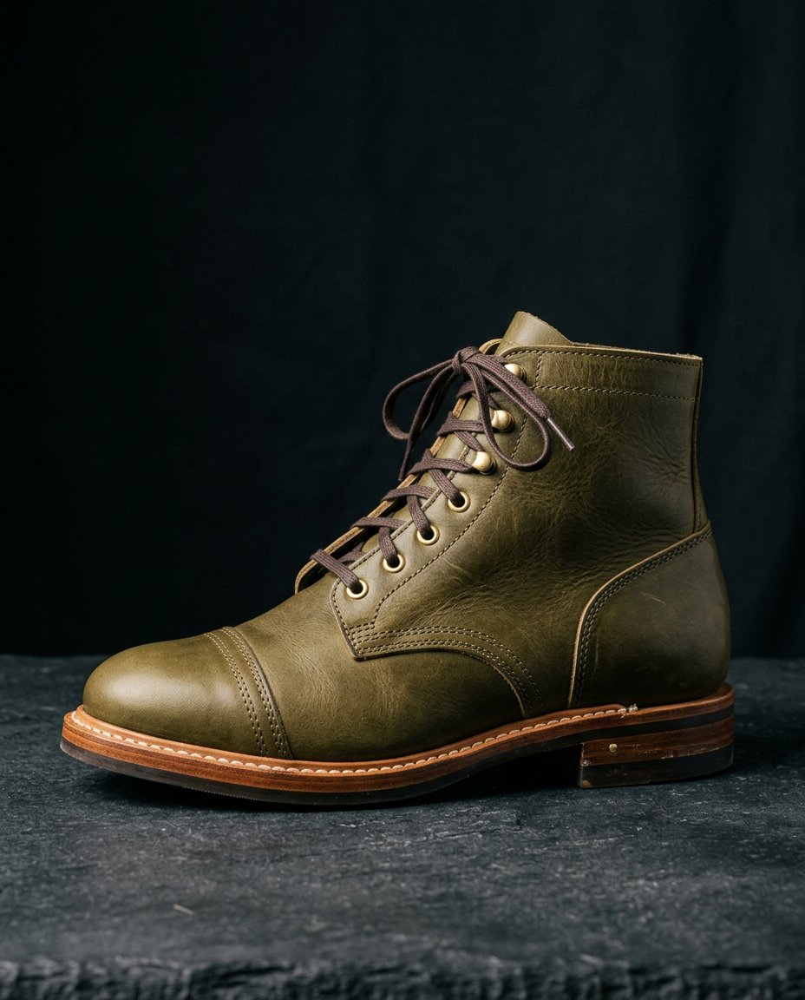
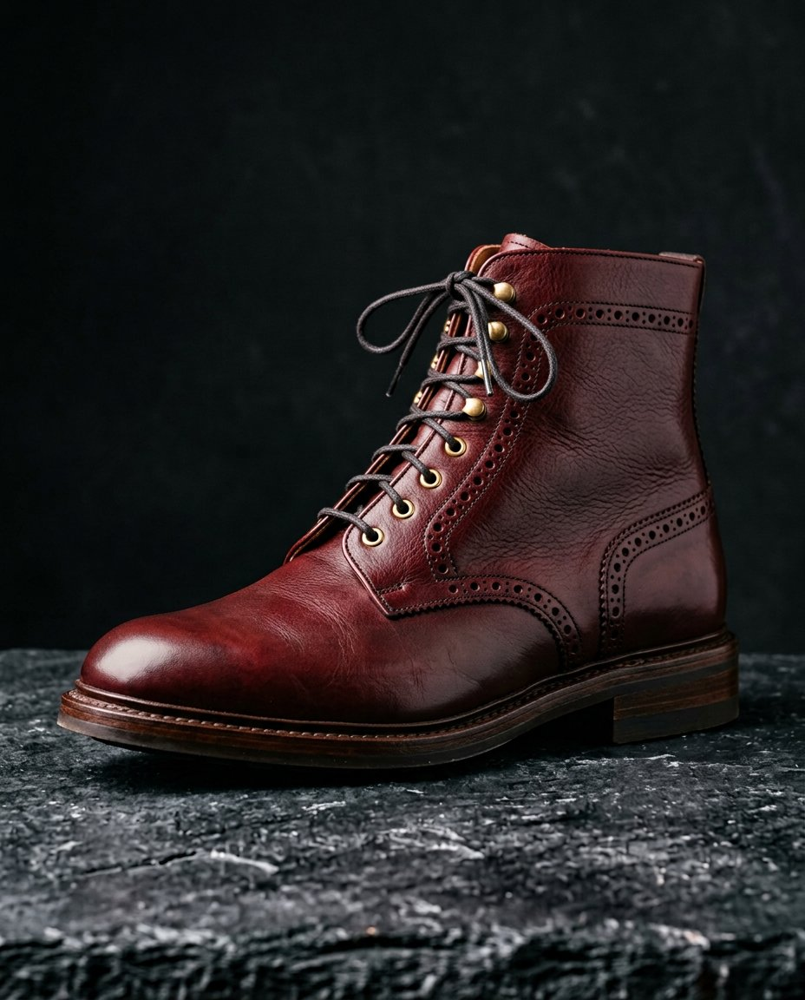
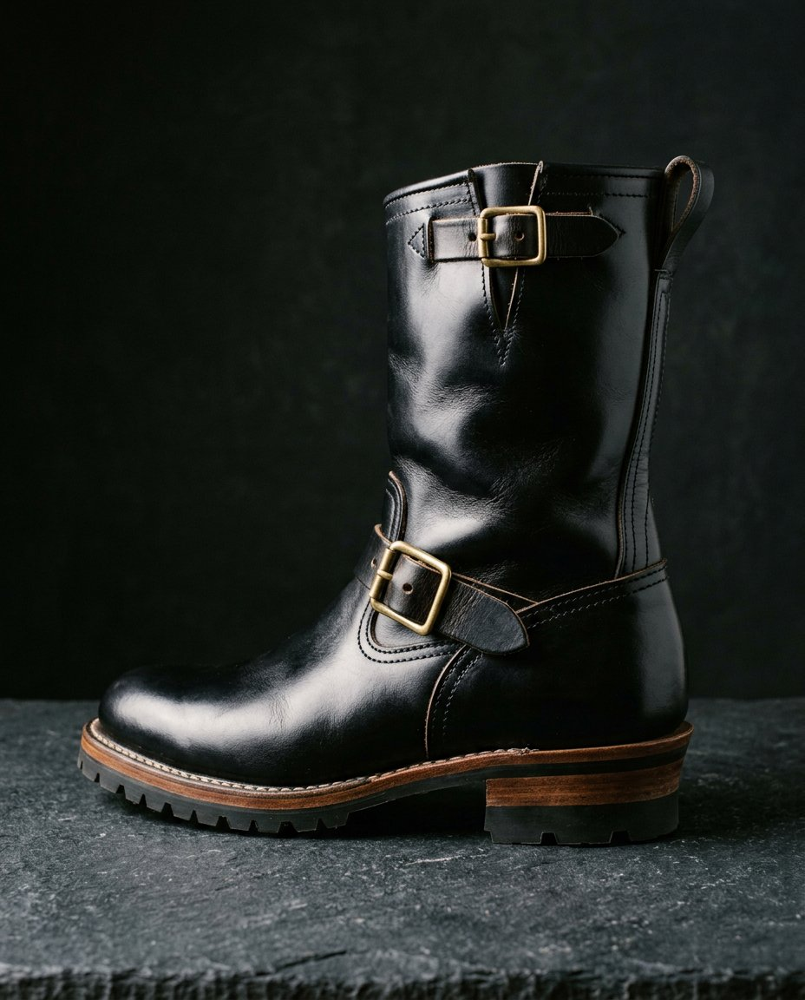
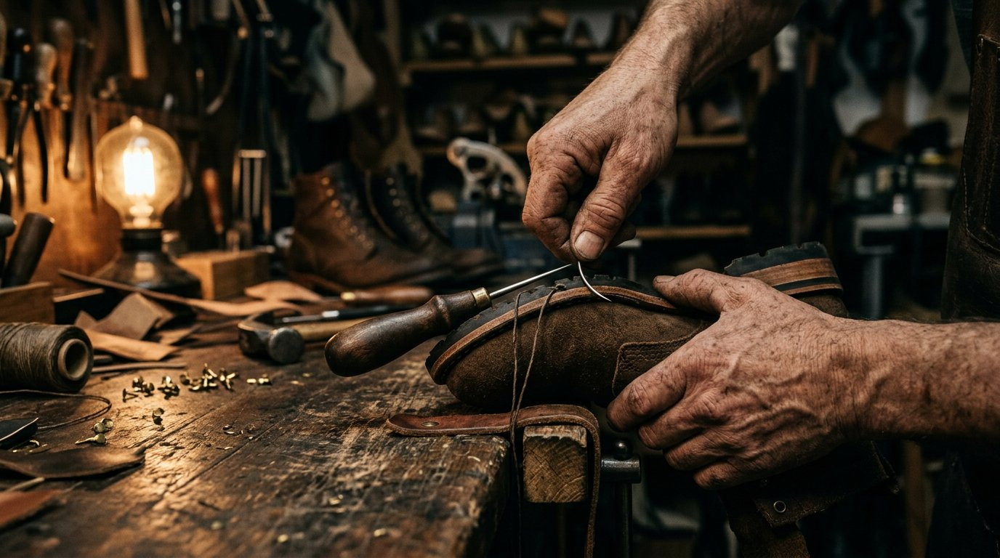
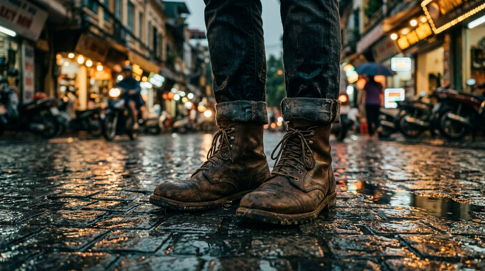

In the workshop
Jul 20254 min read
Thirty-one steps, one bench
What actually happens between a hide and a finished pair — a photojournal from the Ters Kopo studio.
Read the entryBandung, Indonesia — Est. 2013
Hand-welted leather boots from a small studio on Jl. Ters Kopo. Six weeks at the bench, seven pairs a week, and a Goodyear welt that means the story never really ends.



Bandung Toe-Cap
Olive Grove
Tochigi Vachetta
Rp 3.450.000
1 / 3
Small runs, updated as pairs leave the studio. Ready-to-ship styles go out within 48 hours; sold-out styles reopen as made-to-order when a hide allows.
20 of 20 styles

Jl. Ters Kopo studio
Hand-welting bench no. 3
60+ hrs / pair
07
pairs / week
31
bench steps
0
glued soles
Tahura started in 2013 with one bench, a borrowed sewing machine and a stubborn idea: a pair of boots should be the last thing you have to replace. Twelve years later the studio still holds to seven pairs a week. Every welt is stitched by hand, every hide is cut around its scars, and nothing leaves the bench without a maker's initials inside the collar.
Every pair starts with a paper tracing or a studio fitting. We record arch length, ball girth and heel width, then pick a last within 2 mm of your foot.
Hides are inspected under daylight and cut around natural scars rather than through them. Upper, lining and toe puff are clicked, skived and hand-burnished.
The upper is lasted by hand over seven days, then Goodyear hand-welted with a braided waxed thread. This is the stitch that lets a pair be resoled for life.
Leather sole, stacked heel, edge ink and wax. Then the long part: the patina is started by hand in the studio so it only gets better with you.

Field notes
Every Tahura pair carries a record in the studio ledger — hide, last, maker, date. Send them back in ten years and the same bench will re-welt, re-sole and re-finish them for a fraction of a new pair.
10 yr
resole guarantee
1,294
pairs in the ledger
48 h
dispatch in stock
We buy small and we buy often. Every hide is inspected in daylight before it earns a place on the cutting table.
Hides rotate with the seasons and the tanneries' output. If you have a leather in mind, the studio can usually source it for a made-to-order build.
The house leather · Tochigi, Japan
Vegetable-tanned for over thirty days in a small Japanese tannery, then finished with a light wax. It begins olive and settles into a deep moss patina that maps every mile you walk.
Pick a model, a hide and a sole. The studio replies within two working days with a build slot, a fitting sheet and a deposit link.
Your build
Toe-Cap Lace
EU 42
Build sheet
Live estimateBuild estimate
Rp 3.450.000
≈ $212
50% deposit
Prefer to talk it through?
WhatsApp ↗From Braga to Berlin — a few notes from people who put the miles in.
Four wet seasons, one resole, and the olive has gone the colour of old moss. They have outlasted every sneaker I own.
Arya Wibisono
Bandung · Toe-Cap, 2021
4.9
average rating
92%
return for a second
48h
dispatch, in stock
Process, patina and the people who wear the pairs in. New entries every few weeks.
What actually happens between a hide and a finished pair — a photojournal from the Ters Kopo studio.
Read the entryA walk through the old colonial quarter with the monkey boot, three years into its patina.
Read the entryThe small-batch story behind the Cikapundung Croc and why it sells out every cutting.
Read the entryThe studio sits on Jl. Ters Kopo in Bandung. Walk-ins are welcome, but a booked fitting gets the full hour and a coffee.
Tahura studio
Jl. Ters Kopo · Mekar Rahayu
Address
Jl. Ters Kopo, Komplek Bumi Asri Mekar Rahayu
Jl. Mekar 11 Blok 02, RT/RW 04/12 E65, Bandung 40218
Studio hours
Mon–Sat · 09.00–17.00 WIB
Sunday by appointment
Message the bench
Six to eight weeks from deposit, including making the last. We send four build updates by WhatsApp so you know exactly which week the welt is being stitched.
Yes — DHL Express to 40+ countries, two to five working days in transit. Duties are calculated at checkout and no import surprises are left to you.
One free size exchange within 14 days of delivery on ready-to-ship pairs. For made-to-order, we re-last at cost — we would rather rebuild than have a pair sit unworn.
Always. Resoles, welt repairs, stitching and patina work are quoted per pair. Anything we made is repairable for as long as the upper holds.